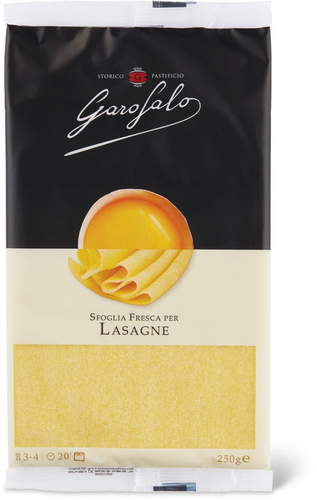

Riparazione Cellulari, Tablet e Computer a Brescia - BresciaPC S.r.l.

Subtotale: € 0.00 Nessun prodotto nel carrello. Subtotale: € 0.00 Nessun prodotto nel carrello.
Riparazione Smartphone
Hai rotto lo schermo del tuo cellulare?
Lo ripariamo in 1 ora su appuntamento!
Riparazione iPhone 12 Pro Max
Devi riparare il tuo iPhone? Contattaci per fissare un’appuntamento! Clicca quiHai bisogno di assistenza fuori garanzia?
Il nostro laboratorio è specializzato nella riparazione smartphone , tablet e smartwatch , notebook , computer PC e console.
Smartphone
Tablet
Notebook
Smartwatch
Console
Riparazione Apple
Riparazione Apple In offerta!iPhone 11 Pro Max
In offerta!iPhone 11
In offerta!iPhone SE
In offerta!iPhone X
Riparazione Samsung
Riparazione Samsung In offerta!Samsung Galaxy S3 Mini
In offerta!Samsung Galaxy S8 Plus
Samsung Galaxy A21s
In offerta!Samsung Galaxy Alpha
Riparazione Huawei
Riparazione Huawei In offerta!Huawei P30 Lite
In offerta!Huawei P30 Pro
Huawei P40 Lite 5G
Huawei Mate 20 X
Perchè scegliere BresciaPC?
Siamo un laboratorio specializzato in riparazioni e assistenza di Smartphone, Tablet, PC e Notebook e Console FUORI GARANZIA. Su molte lavorazioni, specialmente sugli Smartphone e Tablet siamo in grado di interveniresu appuntamento e riparare i principali guasti in 60 minuti. Avvia Live Chat Chiama Ora
Assistenza Apple Brescia
Offriamo servizi di riparazione e assistenza software e hardware fuori garanzia per tutti i prodotti Apple. Ci occupiamo di: Sostituzione vetro touch sceen crepato / incrinato, cambio Display LCD / retina / OLED rotto, sostituzione batteria esaurita, sostituzione connettori e pulsanti guasti, upgrade ram, sostituzione HDD / SSD, sostituzione ventola, cambio pasta termica, risoluzione problemi software e molto altro ancora. Scopri di piùAssistenza Huawei Brescia
Devi riparare il tuo dispositivo Huawei fuori garanzia? Allora sei nel posto giusto! Eseguiamo riparazioni di tutti i modelli di cellulari, tablet, notebook laptop e smartwatch. La maggior parte delle riparazioni vengono eseguite in giornata previa appuntamento. La sostituzione del vetro oppure display è molto veloce e possiamo sostituirlo mentre aspetti in laboratorio. Contattaci per un preventivo.
Scopri di piùHai problemi con la tua Console?
Il nostro laboratorio offre anche un servizio di assistenza e riparazione di console dei migliori brand Fuori Garanzia. Seleziona la marca e il modello della tua console da gioco visualizzare la lista delle riparazioni con i relativi prezzi. Riparazione Nintendo Riparazione Playstation Riparazione XboxEmergenza Coronavirus
Siamo operativi per tutti i servizi di riparazione. Se hai bisogno del ritiro e la consegna a domicilio contattaci. Orario dalle 09.00-12.30 e dalle 14.00-19.00 dal Lunedì / Venerdì. Sabato: 09.00-12.30 Attenzione: non è consentito l’attesa in laboratorio ma solo la consegna e il ritiro del prodotto.Chat WhatsApp
Avvia una chat con il nostro tecnico specializzato per richiedere un parere sulla tua riparazione o per fissare il tuo appuntamento.
Avvia la tua Chat
Chiamaci
Chiama in negozio, uno dei nostri tecnici esperti ti fornirà assistenza garantendoti una pronta risposta alle tue esigenze.
Chiamaci ora
Invia la tua richiesta via mail, un nostro incaricato si occuperà di aiutarti fornendoti tutta l’assistenza di cui necessiti.
Scrivi una e-mail
BresciaPC Srl – Via Volturno 16, 25126 Brescia, IT
P.IVA: 04007950985
SDI: M5UXCR1
Email: [email protected]
WhatsApp: 320 61 64 278
Riparazioni
Riparazioni Smartphone Riparazioni Tablet Riparazioni Notebook Riparazioni Computer Riparazioni Console Riparazioni SmartwatchAltri Link
Account Come Funziona Pagamenti Spedizioni Contatti RecensioniTitoli dei prodotti | nomi degli editori | marchi di fabbrica | logo e immagini sono marchi e/o materiale protetto da copyright dei rispettivi costruttori e proprietari. La pubblicazione di marchi e/o loghi registrati avviene alle esclusive finalità consentite dall’art. 21 c. 1 lett. a) b) c) del Codice della Proprietà Industriale come modificato dal d. lg. n. 131 del 13.8.2010.
Contattaci
Messaggio Inviato
Ti abbiamo inviato una copia del messaggio che hai appena inviato.